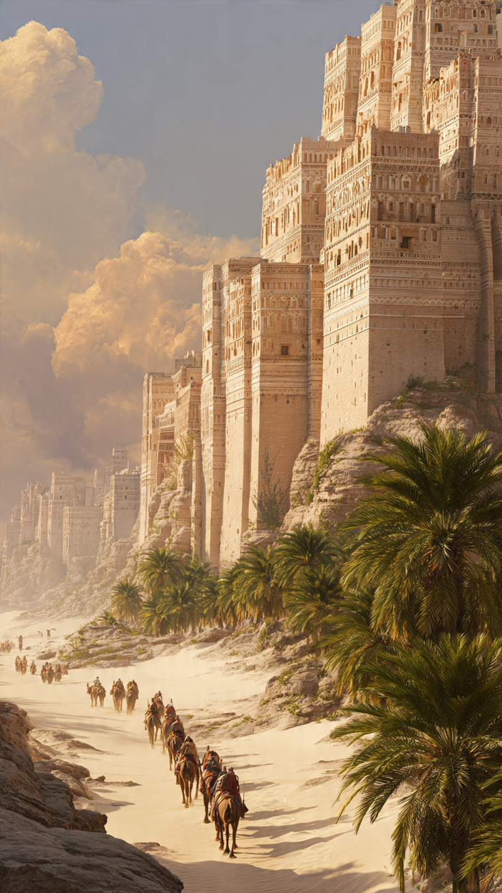

في زمن قديم جدًا، وقبل ظهور الإسلام بسنوات طويلة، كانت هناك ممالك عظيمة في أرض اليمن.
ومن أشهر ملوك تلك البلاد ملوك حِمْيَر، وكان من بينهم ملك عُرف باسم تُبَّع.
وقد ذكر الله تعالى قوم تُبَّع في القرآن الكريم فقال:
"أَهُمْ خَيْرٌ أَمْ قَوْمُ تُبَّعٍ وَالَّذِينَ مِن قَبْلِهِمْ ۚ أَهْلَكْنَاهُمْ ۖ إِنَّهُمْ كَانُوا مُجْرِمِينَ"
كان تُبَّع ملكًا قويًا، يملك جيشًا كبيرًا وسلطة واسعة.
خرج بجيشه في رحلات طويلة، ووصل إلى مناطق كثيرة، حتى أصبح اسمه معروفًا بين الشعوب.
لكن القوة الكبيرة قد تكون اختبارًا للإنسان.
فقد كان أمام تُبَّع خياران:
أن يستخدم قوته في الظلم والتكبر...
أو أن يجعلها سببًا للعدل وحماية الناس.
تروي بعض الروايات أن تُبَّع كان ملكًا مختلفًا عن كثير من ملوك عصره، فقد بحث عن العلم والحكمة، وكان يحب معرفة أسرار الأمم القديمة.
وفي إحدى رحلاته، مرَّ ببلاد كثيرة، والتقى بأشخاص من أهل الكتاب، وسمع منهم أخبارًا عن الأنبياء والرسالات.
بدأ يفكر في معنى الحياة، وعن سبب خلق الإنسان.
لم يكن همه فقط أن يملك المدن والقصور...
بل بدأ يبحث عن الحقيقة.
وكانت رحلته مليئة بالأحداث العجيبة، حتى أصبح من أكثر الملوك الذين تحدث عنهم المؤرخون.
لكن السؤال بقي:
من هو تُبَّع الحقيقي؟
وهل كان ملكًا صالحًا أم مجرد حاكم قوي؟
📷 الصورة رقم 1
واصل تُبَّع رحلاته بين البلاد، وكان في كل مكان يزوره يترك أثرًا خلفه.
كان يرى حضارات مختلفة، ويتعلم من عادات الشعوب وطرق حياتهم.
وفي إحدى الرحلات، وصل إلى أرض الحجاز.
تذكر بعض الروايات أنه مرَّ بمكة، ورأى مكانًا عظيمًا له مكانة خاصة.
تعجب تُبَّع من هذا المكان، وشعر أن لهذا البيت شأنًا كبيرًا.
وتذكر بعض الأخبار أنه اهتم بالبيت الحرام وكرَّمه، لكن تفاصيل ذلك وردت في روايات تاريخية مختلفة، وليست كلها ثابتة.
كان تُبَّع في تلك الفترة يبحث عن الحكمة، وكان يسأل العلماء وأهل المعرفة عن الحق.
لم يكن يريد أن تكون حياته مجرد حروب وانتصارات...
بل كان يريد أن يعرف الطريق الصحيح.
لكن طريق البحث عن الحقيقة لم يكن سهلًا.
ففي كل زمن يوجد من يرفض التغيير، ومن يتمسك بما اعتاد عليه مهما كان خطأ.
كان بعض الناس ينظرون إلى تُبَّع فقط كملك قوي، بينما كان هو يحاول أن يفهم ما وراء القوة والملك.
ومع مرور الوقت، تغيرت نظرة تُبَّع للحياة.
فقد أدرك أن القصور الكبيرة والجيوش الضخمة لن تبقى للأبد.
وأن الإنسان مهما علا شأنه، سيعود في النهاية إلى الله.
وهنا بدأت مرحلة جديدة في حياته...
مرحلة جعلت المؤرخين يختلفون في وصفه، هل كان مجرد فاتح عظيم؟
أم ملكًا تعلَّم من رحلاته وأصبح أقرب إلى الصلاح؟
وكانت الأيام القادمة تحمل الإجابة.
📷 الصورة رقم 2

مع مرور السنوات، بقي اسم تُبَّع حاضرًا في كتب التاريخ.
فقد كان من الملوك الذين جمعوا بين القوة والبحث عن المعرفة، ولذلك اختلف الناس في الحديث عنه.
وقد ذكر بعض أهل العلم أن تُبَّعًا كان ممن آمن بالله، وأن ذمه لم يكن بسبب إيمانه، وإنما بسبب ما فعله قومه من جرائم.
كما ورد في بعض الآثار أن النبي ﷺ نهى عن سبِّ تُبَّع، لكن تفاصيل قصته التاريخية بقيت محل بحث بين العلماء والمؤرخين.
وهكذا أصبح تُبَّع مثالًا على أن الإنسان قد يبدأ حياته في مكانة عظيمة، لكنه يُقاس في النهاية بأعماله وأخلاقه.
فالقوة وحدها لا تجعل الإنسان عظيمًا...
والملك وحده لا يجعل الإنسان خالدًا.
الذي يبقى هو أثر الإنسان وما يقدمه للناس.
اختفت مملكة حِمْيَر بعد قرون، وذهبت القصور والجيوش، لكن قصة تُبَّع بقيت تُروى لأنها تحمل دروسًا عن السلطة، والبحث عن الحق، ومسؤولية الإنسان عندما يمتلك القوة.
فقد تعلمنا قصته أن أعظم انتصار ليس أن تفتح البلدان فقط...
بل أن ينتصر الإنسان على نفسه، ويبحث عن الخير مهما كان موقعه.
👑📖 انتهت القصة 📖👑
العبرة:
القوة والملك لا يدومان، لكن العلم والعدل والبحث عن الحق هي الأشياء التي تترك أثرًا لا يزول.